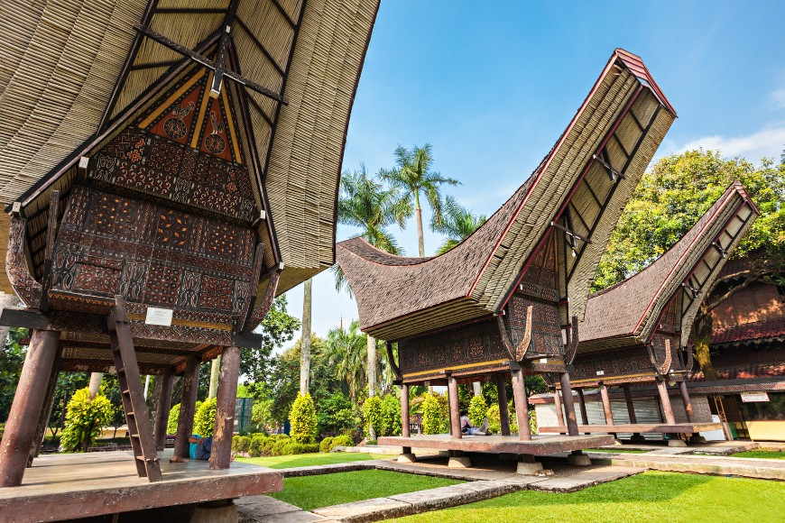
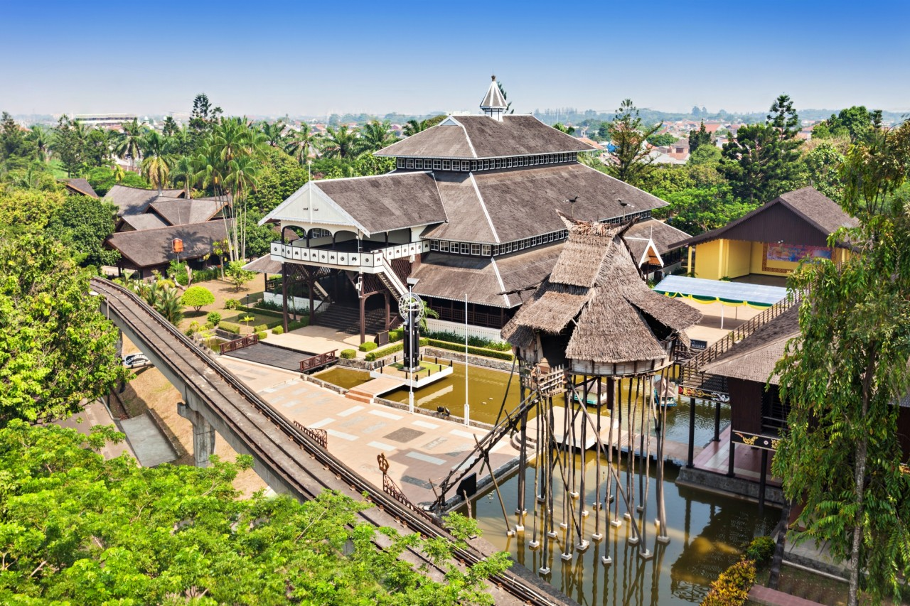
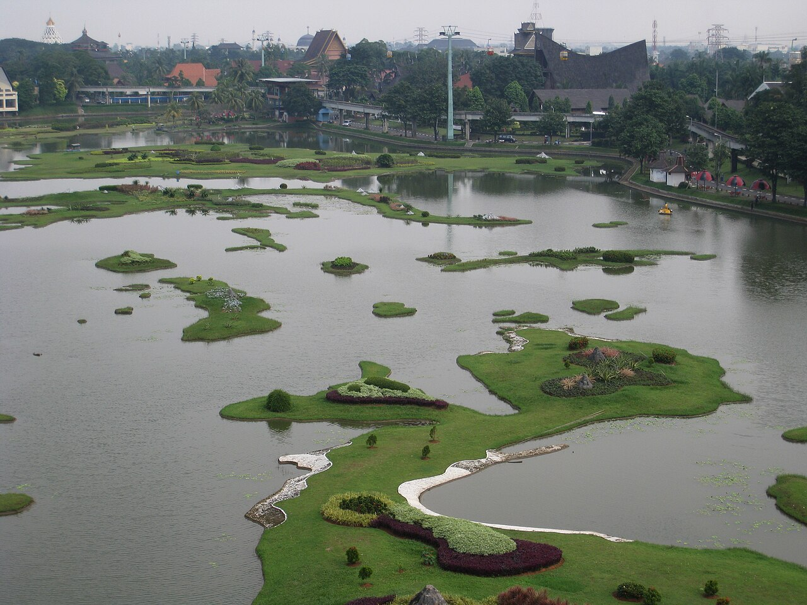
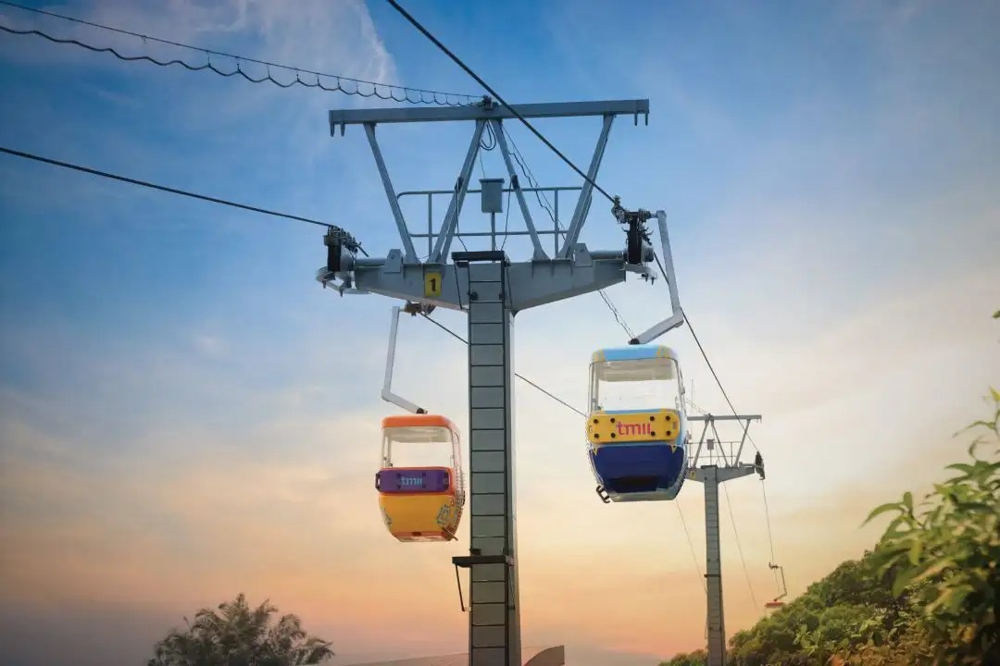

Anjungan Daerah
Rumah adat dari berbagai provinsi, masing-masing memajang pakaian, alat musik, dan kerajinan daerahnya.
Lihat wahananyaTaman Mini Indonesia Indah adalah taman wisata budaya di Jakarta Timur. Di satu kawasan, kamu bisa melihat rumah adat, pakaian daerah, dan kesenian dari berbagai provinsi di Indonesia, lalu lanjut ke museum, taman, dan wahana keluarga tanpa pindah tempat.
TMII diresmikan pada tahun 1975 dan sejak itu menjadi tempat belajar budaya Indonesia tanpa harus keliling negeri: cukup datang ke satu kawasan, lalu berjalan dari satu anjungan daerah ke anjungan berikutnya.
Tempat ini cocok untuk liburan keluarga, wisata sekolah, dan kunjungan pertama ke Jakarta. Halaman tiket ini dibuat supaya urusan masuknya gampang: pesan dari rumah, bayar, lalu scan di gerbang.


Rumah adat dari berbagai provinsi, masing-masing memajang pakaian, alat musik, dan kerajinan daerahnya.
Lihat wahananya
Danau di tengah kawasan dengan miniatur kepulauan Indonesia, paling enak dilihat dari kereta gantung.
Lihat wahananya
Kabin gantung yang melintasi kawasan; dari atas terlihat danau dan deretan anjungan di bawahnya.
Lihat tiketnya